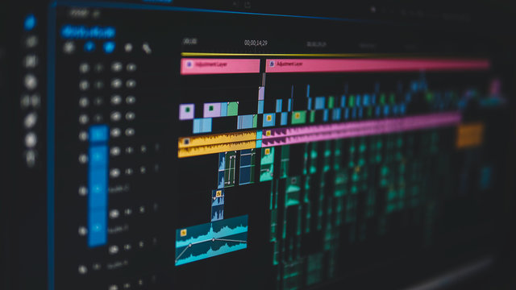

About
- About Us
- Welcome to Video Production Brand, a hub of creativity and technical excellence in video production. Established in 2023 in Chapel Hill, our studio specializes in bringing stories to life through the art of film. Our team, comprising skilled filmmakers and innovative editors, is driven by a passion for visual storytelling. We pride ourselves on creating content that resonates, whether for commercial purposes, artistic expression, or personal narratives. At Video Production Brand, every project is an opportunity to exceed expectations and leave a lasting impact. Join us as we continue to explore the endless possibilities of the moving image.

- Our Mission
- Our Mission is to deliver high-quality, creative video solutions that meet and exceed our clients' expectations. We are here to serve you!

- Meet The Team
- Owen Osborne: The CEO and President of Video Production Brand INC.

- Noah Cannon: The lead videographer and photographer.
- Isaac Uribe: The chief editor and expert in digital marketing.
- Our History
- Founded in 2023 in Chapel Hill, Video Studio Brand started as a small team of film enthusiasts. Quickly evolving into a leading video production studio, our journey has been marked by a passion for storytelling and technological innovation. Today, we stand proud of our diverse portfolio and our commitment to excellence in every project. Our history is a reflection of our dedication to the art of video and our constant pursuit of creative excellence